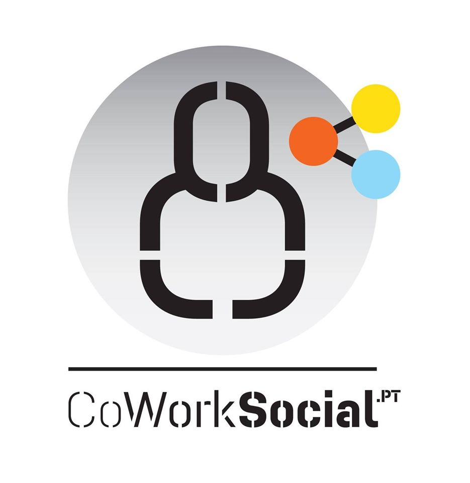
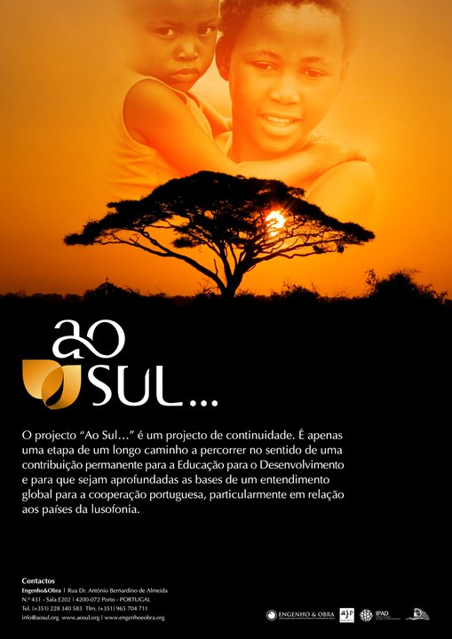
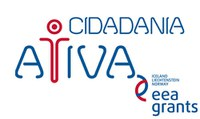
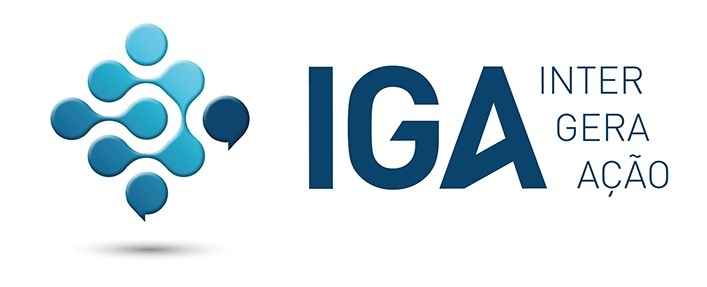

O conceito de ENGENHARIA SOLIDÁRIA, promovida pela Engenho&Obra, inclui iniciativas que possam significar benefícios reais para as populações num modelo de desenvolvimento inclusivo e sustentável e capaz de gerar educação, saúde, cultura, lazer, saneamento, habitação, energia, mobilidade e segurança, através da participação ativa da Comunidade Académica em ações de Responsabilidade Social. A Engenho&Obra dinamiza a aplicação da engenharia em contexto social para dar respostas eficazes a problemas reais, em articulação com outras áreas do conhecimento. A participação nesta iniciativa proporciona aos alunos/as uma experiência em contexto real e em equipas multidisciplinares, composta por aprendizagens não formais na vertente do voluntariado, da solidariedade e da cidadania ativa numa oferta extra – curricular de desenvolvimento técnico e pessoal com averbamento no Diploma de Curso, cada vez mais valorizadas no mercado de trabalho. A iniciativa ENGENHARIA SOLIDÁRIA integra a noção de que TODOS/AS PODEMOS SER AGENTES TRANSFORMADORES, permitindo aos intervenientes com a sua experiência, o seu saber e a sua vontade participar em ações de divulgação e sensibilização; Iniciativas conjuntas de apoio social; Estágio curricular; Grupos de trabalho de desenho de projeto; Missões nos Países da Lusofonia. (desde 2018)

Um projeto financiado pelo mecanismo EEA Grants e gerido pela Fundação Calouste Gulbenkian, destinado a jovens dos 18 aos 30 anos da Grande Área Metropolitana do Porto. Foi dinamizado no Porto e em S. João da Madeira. O Projeto resulta de uma parceria com a Junta de Freguesia de Paranhos, a Associação Ecos Urbanos, o Coworking de São João da Madeira e a empresa RH Positivo e visou capacitar e potenciar jovens desempregados(as) para o empreendedorismo de inovação social (2015-2016).

Projeto de intervenção para a sensibilização da opinião pública portuguesa para as realidades económicas, sociais, culturais e ambientais dos países em desenvolvimento, nomeadamente da Província de Malange em Angola: conceção e a implementação de ações concertadas de Educação e Desenvolvimento, nas zonas Norte, Centro e de Lisboa e Vale do Tejo. O Projeto inclui a elaboração de um documentário em Angola, designado “Viver Ao Sul”, que envolve ativamente as comunidades locais de Malange na sua conceção e realização. Apoiado e financiado pelo IPAD (2008 / 2010)

Um Projeto destinado à capacitação e inclusão das mulheres, para sensibilizar a sociedade portuguesa para a necessidade de reconhecer e apoiar o papel das Mulheres no Desenvolvimento Global, nomeadamente no Sul, a capacitar mulheres rurais, artesãs e empresárias do Norte para analisar e intervir nos processos de desenvolvimento global. Autor: AJPaz, participação da E&O no Consórcio promotor. Apoiado e financiado pelo IPAD (2008 / 2010).

Um Projeto que teve como principal finalidades sensibilizar e mobilizar as/os agentes locais de desenvolvimento para um consumo responsável e sustentável, reforçar modelos sustentáveis de desenvolvimento socioeconómico e alargar as práticas de Educação para o Desenvolvimento a territórios locais e rurais em Portugal. Autor: AJPaz, participação da E&O, como Entidade Parceira. Apoiado e financiado pelo IPAD (2008 / 2010).

Projeto de construção de um Centro Comunitário, na aldeia de Alto Balide, Díli, Timor-Leste. Financiado com verbas próprias da FENPROF (2007 / 2010).

Participação neste Projeto da Escola Superior de Educação de Lisboa (ESELx), na qualidade de Entidade Associada, no âmbito da iniciativa “EDULINK: Programa de Cooperação ACP-EU para o Ensino Superior”. O Projeto teve como objetivo desenvolver uma rede de formadores, capaz de ministrar formação contínua a professores que se encontram inseridos no sistema educativo e que podem desempenhar o papel de peritos no desenvolvimento da educação básica ao nível regional. Financiado pela Comissão Europeia (2009 / 2011).

Projeto que pretendeu promover a inovação social apoiando a inclusão social de mulheres desempregadas da Freguesia de Paranhos (Porto), fomentando a aquisição de competências, em contexto formal e não formal, visando o seu sucesso pessoal e profissional. Apoiado pela Junta de Freguesia de Paranhos e financiado pelos Prémios CEPSA Ao Valor Social (2012/2013).

Da Associação Portuguesa de Deficientes (APD), um dos projetos vencedores do Programa Cidadania Ativa de 2013, gerido pela Fundação Calouste Gulbenkian. O objetivo deste projeto foi aumentar o conhecimento dos dirigentes, técnicos, trabalhadores e voluntários da APD no domínio da igualdade de oportunidades para pessoas com deficiência, a fim de permitir uma maior eficácia nas ações a realizar neste domínio. Pretendeu também ampliar as suas competências na área da gestão e empreendedorismo social, a fim de melhorar a eficiência e a transparência da associação e a sua sustentabilidade financeira (2013-2014).

Em parceria com a Escola Superior de Tecnologias da Saúde do Porto, o qual ganhou o 1º lugar do Concurso EUROPE FOR CITIZENS PROGRAMME, da Comissão Europeia. O Projeto IGA propôs-se criar uma rede de Cidadania, para promover a divulgação dos direitos da Europa e disseminar as melhores práticas, estimulando o diálogo e a interação entre grupos de cidadãos e instituições europeias, para encontrar soluções para diversos tipos de exclusão social, no sentido da justiça social e de uma Europa mais sustentável. Envolveu intervenientes e especialistas diversos de IES, ONG, autoridades locais, estudantes, professores, investigadores e empresários (2013-2015).
Projeto para desenvolvimento e implantação de 2 Unidades, uma para secagem de peixe e outra para secagem de frutos e legumes, apresentado ao Governo da Guiné-Bissau. Este projeto enquadra-se num Memorando de Entendimento, assinado a 22 de Janeiro 2014 em Bissau, entre a E&O e o Governo da República da Guiné-Bissau. (desde 2014).
Projeto iniciado com a promoção de uma Oficina de Fornos Solares, com ações de formação em Portugal e em Moçambique (desde 2011).
A E&O integra este programa europeu, que é a resposta do European Institute for Innovation and Technology (EIT) às preocupações dos decisores políticos europeus para garantir que haja uma maior participação nas atividades de pesquisa, ensino e inovação das Comunidades de Investigação e Inovação. Esta Rede Europeia é composta por seis países, Hungria, Itália, Alemanha, Polónia, Espanha e Inglaterra, para além de Portugal e integra instituições académicas, organizações de investigação, empresas, agências públicas e outras organizações (desde 2014).
É um projeto desenvolvido no Chade, assente na produção de uma energia alternativa, os briquetes, muito semelhantes ao carvão de madeira, tanto na forma como na combustão, tornando-se uma alternativa perfeita e culturalmente adaptada. A Envodev-Tchad está encarregue do desenvolvimento do projeto no local, contando em Portugal com o apoio da nossa organização e da Coordenadora, Carolina Marques (desde 2014).
Tem como parceiros o P.Porto; ISEP; Nantinyan ONG; ADS ONG; Movimento Nac. Soc. Civil para a Paz, Democracia e Desenvolvimento ONG; Ação: Melhorar a Oferta e Segurança Alimentar e a Competitividade nos setores agrícola, da produção animal e das pescas, no âmbito de um ambiente de negócios socialmente responsável e compatível com os Direitos Humanos. Este projeto foi inteiramente desenhado pelo Grupo de Trabalho da parceria E&O+ISEP+IPP(ISCAP), no sentido de criar as condições necessárias para uma intervenção holística de qualidade nas margens do Rio Grande Buba, promovendo-se a estruturação de três eixos: Oferta e a Segurança Alimentar (Eixo 1), Agricultura, Pecuária e Pescas (Eixo 2) e Ambiente de Negócios Socialmente Responsável (Eixo 3). A transversalidade da intervenção e boas práticas nas vertentes da Qualidade, Ambiente e Social apresentou-se como fator inovador numa lógica de acompanhamento “do prado e mar ao prato” no sentido de melhorar a oferta e a segurança alimentar, reforçar a competitividade nos setores agrícola, da produção animal e das pescas, intervindo na cadeia de valor e igualmente dinamizando um ambiente de negócios socialmente responsável (desde 2017).
Tem como parceiros o P. Porto – Instituto Politécnico do Porto (ESS); ALISEI ONG (Itália); Integra Institut (Roménia); Ação: Identificar problemas locais e transnacionais de / por cidadãos excluídos, nomeadamente imigrantes e refugiados, a fim de encontrar soluções que contribuam para a promoção da paz e o bem-estar das pessoas. O projeto liderado pela ESS – Escola de Saúde do Porto, propõe trabalhar diretamente com indivíduos e grupos de imigrantes e refugiados e cidadãos locais, organizados em painéis / focus groups para identificar os problemas que atualmente impedem a compreensão do que é ser um cidadão europeu, os seus valores e objetivos e os seus direitos como cidadãos plenos, tentando compreender como esta perspetiva dificulta a aceitação e a abertura para acolher os imigrantes e refugiados que procuram a Europa como destino. Com os indivíduos, seriam recolhidas narrativas abrangentes da sua vida, experiências e valores, para obter uma perceção mais precisa das dificuldades e aspetos positivos da sua integração e para promover a participação cívica dos nacionais de países terceiros que residam legalmente na EU (desde 2018).
Tem como parceiros o P. Porto – Instituto Politécnico do Porto, a UTAD - Universidade de Trás-os-Montes e Alto Douro, o CIFAP - Departamento de Ciências Florestais e Arquitetura Paisagista da UTAD, a ONG ADADER (São Tomé e Príncipe) e a ALISEI, ONG (Itália); Ação: Ação comunitária integrada e inclusiva de adaptação às mudanças climáticas nas áreas rurais do distrito de Lembá - STP. A participação da E&O neste projeto surge através de convite feito pela entidade ALISEI,ONG de Itália, organização com intervenção continuada em São Tomé e Príncipe, onde executa com êxito projetos nas vertentes ambiental e social. Um dos desafios mais importantes dos próximos anos para São Tomé e Príncipe é a proteção do meio ambiente. As alterações climáticas, com a diminuição das chuvas e o empobrecimento das encostas dos rios, a erosão costeira e as inundações, a poluição de rios, riachos e fontes devido aos produtos químicos, a expansão desordeira das áreas urbanas, o desmatamento e a deterioração das florestas e a perda de biodiversidade, a utilização das áreas com potencialidades agrícolas para outros fins e a deterioração dos solos, são exemplos da vulnerabilidade a que o meio ambiente deste arquipélago está sujeito. A proposta de execução apresentada pela E&O visou, por um lado, estabelecer polígonos de floresta comunitária que servissem as população das comunidade no distrito de Lembá, e por outro, construir viveiros florestais com o objetivo de fornecer plantas para a reflorestação da zona tampão do Parque Obô e para a manutenção dos polígonos florestais, contribuindo desta forma para a melhoria das condições de vida da população do distrito de Lembá, onde mais de 50% da população vive abaixo da linha de pobreza (2017).
Tem como parceiros o P. Porto – Instituto Politécnico do Porto (ISEP/ISCAP), o Banco Asiático de Desenvolvimento (BAsD) e o Governo de Timor. Ação: Apoiar a melhoria do sistema operacional e a profissionalização da atividade da Energia em Timor Leste. Na sequência de reunião bilateral com a representante europeia aquando da participação da E&O no evento realizado pelo Banco Asiático de Desenvolvimento (ADB) e promovido pela AICEP – Portugal Global em Março de 2017, foi considerado relevante e oportuno por ambas as partes a apresentação de uma proposta de intervenção para Timor - Leste na área da Energia. Este projeto constituiria uma excelente oportunidade para se desenhar uma intervenção integrada, multidisciplinar resultante da dinâmica do Grupo de Trabalho da parceria E&O+ISEP+IPP(ISCAP). O setor da Energia é de vital importância para o crescimento económico e desenvolvimento humano e, atualmente, o Governo só consegue cobrar 28.8 milhões de USD de um total de 64.2 milhões de USD de energia gasta. Neste contexto, a proposta de intervenção é consistente com as prioridades do Governo de Timor-Leste e os objetivos da parceria estratégica celebrada com o ADB – Banco Asiático de Desenvolvimento, que pretende apoiar a melhoria do sistema operacional e a profissionalização da atividade da Energia em Timor Leste (desde 2017).
Proposta de estudo para intervenção técnica no âmbito da redução da fatura energética nos bairros sociais, nos clubes desportivos e nas infraestruturas de apoio social (desde 2018).
Trata-se de uma iniciativa deformação de caraterísticas inovadoras enquadrado na valência de Educação para o Desenvolvimento, um produto da E&O que a distingue, composto por formação em sala, trabalho de campo, visita a ONG’s portuguesas e programa turístico na cidade do Porto. É direcionado para dirigentes, técnicos intermédios e superiores de organizações da sociedade civil (OSC) e das estruturas de poder político local dos países da Lusofonia, os quais se deslocam a Portugal por 10 dias (desde 2013).
Pela importância estratégica de que se reveste e pela atualidade que transporta, o “Manifesto - Ideias Para Um Programa De Povoamento E Desenvolvimento Integrado Do Interior” merece a atenção devida e ser assumido, pelo menos, como um compromisso a intentar. Sobrevem ainda o facto dos conceitos e princípios do documento se inserirem perfeitamente na Missão da E&O, “Melhorar a qualidade de vida das populações de países fragilizados, criando condições que permitam aumentar a sua autonomia”. Neste sentido, a E&O apoia os princípios e conceitos do Manifesto e a promoção e apoio a eventuais iniciativas e sua divulgação (desde 2018).